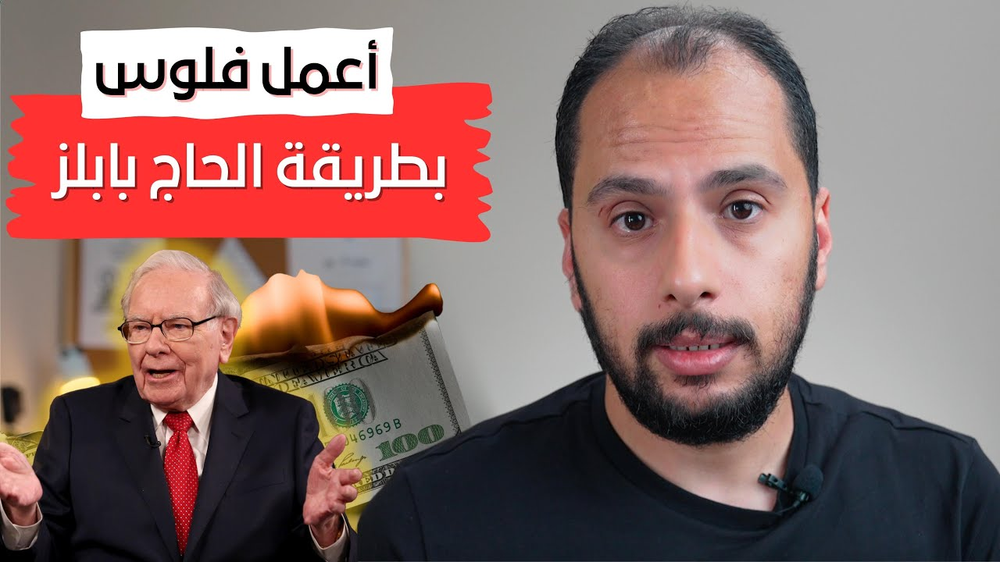

فلوس واستثمار
هرم وارن بافيت لمواجهة التضخم / 4 طرق للحفاظ علي قيمة أموالك واستثمارها
الفلوس هي اللي بترخص، مش السلع اللي بتغلى بس. 4 طرق مرتّبة زي الهرم في مواجهة التضخم: من الشهادة والبنك، للدهب والعقارات والأسهم، للمشروع اللي بتدفع تكلفته مرة واحدة، لحد الاستثمار في نفسك، اللي Warren Buffett بيقول إنه أفضل حماية ضد التضخم.

شغّل الحلقةفاكر وأنا صغير كان مصروفي حوالي 50 قرش، وكنت وقتها بقدر أشتري بيهم إزازة حاجة ساقعة. ودلوقتي لو محتاج أجيب إزازة حاجة ساقعة زي دي، محتاج أدفع حوالي 9 أو 10 جنيه تقريبًا. طب إيه اللي حصل؟
وليه السلع أصلًا بتغلى؟ تفتكر علشان الدولار بيغلى؟ وارد بنسبة، لكنه مش السبب الأساسي، لأن السلع برضه في أمريكا بتغلى رغم إنهم بيتعاملوا بالدولار. الحقيقة، الفلوس هي اللي بترخص، أو قيمتها بتقل، نتيجة حاجة بتتسمى التضخم. والتضخم ده مش بيفرق ما بين دولة ودولة، وهو اللي بقدرة قادر بيحوّل قيمة العشرة جنيه لنص جنيه.
ولأن التضخم عدو شرس وأضراره خطيرة، كل الدول والمؤسسات بتحاول تحاربه علشان تقلل أضراره على الاقتصاد. ده على مستوى الدول، طب الأفراد اللي زيي وزيك يعملوا إيه؟ قدامهم حل من الاتنين: الحل الأولاني، واللي بيكون مناسب لمعظم الناس، إنهم يحاولوا يحافظوا على قيمة فلوسهم علشان ما تقلش. والحل التاني، وده ممكن يلجأ له عدد قليل من الناس، إنهم يحاولوا يضعّفوا قيمة فلوسهم في أوقات التضخم.
وفي المقال ده هشرح لك أربع طرق مرتّبة زي الهرم، مبنية على أفكار Warren Buffett في مواجهة التضخم، وهتساعدك تنفذ أي حل من الحلين. ولو ما تعرفش Warren Buffett، فهو واحد من أعظم المستثمرين في تاريخ الأسهم، وواحد من أغنى أغنياء العالم.
إيه هو هرم مواجهة التضخم؟ 1:45
خبرة Warren Buffett في الاستثمار كبيرة جدًا، تعدّي الـ70 سنة،1 ومر فيها بفترات تضخم وركود وأزمات اقتصادية كبيرة جدًا، وعدّى من الفترات دي كلها بإمبراطورية استثمارية ضخمة. علشان كده كلامه عن التضخم يستاهل نسمعه كويس.
والطرق الأربعة دي مرتّبة زي الهرم: الطريقة الرابعة هي قاعدة الهرم، وهي أضعف طريقة واللي ممكن تتأثر بطوفان التضخم. أما الطريقة الأولى فهي قمة الهرم، ودي بتكون بعيدة جدًا عن طوفان التضخم. وقبل ما نطلع الهرم خطوة خطوة، خد بالك من حاجة: إنك تسيب فلوسك في البيت تحت البلاطة، ده معناه إنك بتغامر بجزء كبير من قيمتها.
هل شهادات الاستثمار بتحمي فلوسك من التضخم؟ 2:23
على الرغم من إن أسوأ الطرق اللي ممكن تحافظ بيها على قيمة الفلوس هي إنك تحطها في شهادة أو تحطها في بنك، إلا إنها على الأقل أفضل بكتير من إنك تسيب الفلوس تحت البلاطة.
ودي الطريقة الرابعة، اللي ممكن يلجأ لها أي حد علشان يقلل من أضرار التضخم عليه، وهي من الطرق اللي مش محببة لمعظم المستثمرين.
الدهب والعقارات والأسهم: كفاية في مواجهة التضخم؟ 2:43
الطريقة التالتة في الهرم هي إنك تحط فلوسك في دهب أو عقارات أو أسهم. والطريقة دي أفضل بكتير من اللي قبلها في مواجهة التضخم، وبتحافظ على القيمة الفعلية لفلوسك.
لكن رغم كده، Warren Buffett بيقول إن الدهب مش الأفضل: آه مع الوقت قيمته ممكن تزيد، لكن كمية الدهب هتفضل زي ما هي، مش بتزيد.2 يعني في الآخر ما نقدرش نقول عليه استثمار.
وفي الحقيقة الطريقة الرابعة، ومعاها الدهب، الهدف منهم هو التقليل من أضرار التضخم، لكنهم في النهاية مش هيساعدوك تستثمر فلوسك أو تزوّدها. وهما طبعًا أسهل الطرق وأقلها مخاطرة، عشان كده بيلجأ لها معظم الناس.
حكاية الحاج بابلز: ليه المشروع اللي بتدفع تكلفته مرة واحدة أحسن؟ 3:20
لكن مستثمر مخضرم زي Warren Buffett مش بيكتفي إنه يقلل أضرار التضخم؛ هو دايمًا بيستهدف تحقيق أرباح في كل الأوقات. والطريقتين اللي جايين هما اللي بيشكلوا الجزء العلوي من الهرم. وبصراحة وأنا بحضّر الحلقة دي كنت متخيل إن الطرق دي هتنفع للمستثمرين الكبار أصحاب الأموال، لكني اتفاجئت لما اكتشفت إن أي حد ممكن يطبقها عادي بحسب إمكانياته، طالما ملتزم بالفكرة الأساسية.
الطريقة التانية هي اللي فيها ممكن تنتقل من مجرد شخص بيحاول يحافظ على قيمة فلوسه من التضخم، لشخص بيستثمر فلوسه ويضاعفها. والطريقة دي بتعتمد على إنك تعمل مشروع من المشاريع اللي تكلفتها بتتدفع مرة واحدة بس، ودي بتكون أفضل بكتير من المشاريع اللي تكاليف إنتاجها عالية ومستمرة.2
وعلشان أبسط لك الفكرة، تعالى أحكي لك حكاية الحاج بابلز، والأرقام فيها مش حقيقية، دي مجرد مثال علشان أقرّب لك الفكرة. الحاج بابلز كان تاجر لبان قد الدنيا. مع بداية السنة اشترى شحنة لبان من الصين بقيمة 100 ألف جنيه، وحط هامش ربح 20%. وفعلًا على نهاية السنة كان بايع المخزون اللي عنده كله بـ120 ألف جنيه. لكن لأن نسبة التضخم في السنة دي كانت حوالي 20%، فلما جه يشتري نفس كمية اللبان اللي اشتراها السنة اللي فاتت، لقى سعرها 120 ألف جنيه.
الحاج بابلز اتضايق جدًا وقعد يفكر: لو اشتريت بالفلوس اللي معايا دي لبان تاني وقعدت أبيع فيه سنة كمان، مش هعمل أي ربح خالص. ففكر يعمل career shift في شغلانة قريبة شوية، وقرر يعمل قناة YouTube يعلّم فيها الناس إزاي يعملوا بابلز باللبان. كان عنده أوضة فاضية في البيت، فقرر يستغلها ويوضبها، وجاب إضاءة وكاميرا ومايك نضيف، شوية حاجات كده كلفته حوالي 100 ألف جنيه.
وبدأ فعلًا يشتغل ويعمل 2 فيديو في الأسبوع. وعلى نهاية السنة بدأت قناته تنتشر، وكان عامل فيها حوالي 100 فيديو، دخّلوا له دخل total في السنة 100 ألف جنيه. لو بصينا للموضوع بطريقة نظرية، هنلاقي إن مشروع اللبان دخّله حوالي 20% ربح، لكن مشروع الـYouTube ما دخّلوش أي ربح.
لكن لو بصينا بطريقة مختلفة شوية، هنلاقي إن الـ20% اللي دخلوا من مشروع اللبان راحوا في التضخم. علشان الحاج بابلز يكمل في مشروع اللبان، كان محتاج يحط total الفلوس بتاعته تاني علشان يشتري بيها لبان، وهكذا الدايرة ما كانتش هتنتهي. عكس مشروع الـYouTube: في أول سنة خرّج نفس المبلغ اللي اتدفع، ولو ضفنا عليه الـ20% بتوع التضخم يبقى المشروع خارج خسران. لكن هنا عنده ميزة مهمة جدًا: مش محتاج يحط الـ100 ألف جنيه دي تاني علشان يكمل. هو محتاج بس يكمل ويعمل فيديوهات أكتر، ولو افترضنا إنه كمّل على نفس المعدل، فبعد تاني سنة القناة هتدخّل له 200 ألف جنيه.
فالفرق بين المشروعين إن مشروع اللبان بيحتاج مصاريف عالية لتشغيله، ومحتاج استمرارية في الصرف، أما مشروع الـYouTube فمحتاج مصاريف تتدفع مرة واحدة بس علشان يشتغل لفترات كتيرة. ونصيحة Warren Buffett هنا إنك تحاول تعمل المشاريع اللي من النوع التاني، لأنها هتكون أفضل بكتير في فترات التضخم وغيرها. طبعًا التحدي اللي هيواجهك هو إنك تكتشف المشروع اللي يقوم على الفكرة دي.
ليه الاستثمار في نفسك هو قمة الهرم؟ 6:39
ودلوقتي نروح لقمة الهرم، وهي الاستثمار في نفسك. Warren Buffett بيقول إن الاستثمار في نفسك هو أفضل حماية ضد التضخم.3 والمقصود بالاستثمار في النفس هنا إنك تحاول تبقى شخص بيقدّم قيمة لكل اللي حواليه. مهاراتك الشخصية والعلمية هي اللي هتخلي الناس يدفعوا لك في كل الأوقات، ومهما قلّت قيمة العملة، هتفضل محتفظ بقيمتك.
وخد مثال: الشباب اللي أخدوا قروض علشان يكملوا تعليمهم الجامعي، ممكن في النهاية يخرجوا مستفيدين كتير جدًا. لأن قيمة الفلوس اللي أخدوها من القرض مع الوقت هتقل، وفي المقابل هما زوّدوا من قيمة نفسهم بالعلم والمهارات اللي اكتسبوها.
نصيحتي ليك: تبدأ منين؟ 7:21
علشان كده نصيحتي لك النهارده: لو معاك فلوس، حاول تستثمر جزء منها في تعليمك، وجزء تاني في المشاريع اللي مش بتحتاج رأس مال كبير، ويفضّل طبعًا تكون المشاريع دي من النوع اللي بتدفع تكلفته مرة واحدة.
ولو انت طالب أو مش معاك فلوس تستثمر، حاول تحوّش في نفسك، وتتعلم كل يوم حاجة جديدة في مجال من مجالات المستقبل. زوّد من مهاراتك علشان تأمّن نفسك من أي أزمة أو تضخم. لأن التضخم ممكن يبلع قيمة الفلوس، لكنه ما يقدرش يبلع قيمة مهاراتك وعلمك، أو بمعنى أدق، ما يقدرش يبلع قيمتك.
فصول الحلقة
أسئلة شائعة
إيه أفضل حماية من التضخم بحسب Warren Buffett؟
الاستثمار في نفسك: إنك تبقى شخص بيقدّم قيمة لكل اللي حواليه. مهاراتك الشخصية والعلمية هي اللي هتخلي الناس يدفعوا لك في كل الأوقات، مهما قلّت قيمة العملة.
هل شهادات الاستثمار بتحمي فلوسك من التضخم؟
الشهادة أو البنك من أسوأ الطرق للحفاظ على قيمة الفلوس، لكنها على الأقل أفضل بكتير من إنك تسيبها تحت البلاطة. هي بتقلل أضرار التضخم، لكنها مش هتساعدك تستثمر فلوسك أو تزوّدها.
ليه الدهب مش أفضل طريقة لمواجهة التضخم؟
لأن Warren Buffett بيقول إن قيمة الدهب ممكن تزيد مع الوقت، لكن كميته هتفضل زي ما هي مش بتزيد، فما نقدرش نقول عليه استثمار.
إيه نوع المشروع اللي ينفع في فترات التضخم؟
المشروع اللي مصاريفه بتتدفع مرة واحدة بس علشان يشتغل لفترات كتيرة، بدل المشروع اللي محتاج مصاريف عالية واستمرارية في الصرف. والتحدي إنك تكتشف المشروع اللي يقوم على الفكرة دي.
تصحيحات
- قلت إن Warren Buffett لما اتسأل عن التضخم قال 4 طرق مرتّبة زي الهرم. الهرم ده ترتيب لبعض أفكار Buffett، مش حاجة هو قدّمها بنفسه. اللي كتبه فعلًا في رسالته للمساهمين عن سنة 2011 إن فيه 3 أنواع من الاستثمار: استثمارات مربوطة بعملة زي الودائع والسندات، وأصول ما بتنتجش حاجة زي الدهب، وأصول منتجة زي الشركات والمزارع والعقارات، ودي اللي بيفضّلها.2
- قلت إن الشهادة أو البنك، بحسب Buffett، أحسن بكتير من إنك تسيب فلوسك تحت البلاطة. ما لقيتش إن Buffett قال المقارنة دي؛ وفي نفس الرسالة وصف الاستثمارات المربوطة بعملة، ومنها الودائع في البنوك، بإنها من أخطر الأصول، رغم إن الناس شايفاها آمنة.2
- حطيت العقارات والأسهم مع الدهب في درجة واحدة وقلت إن Buffett شايفها مش الأفضل، وإنها مش هتساعدك تزوّد فلوسك. Buffett بيحط الدهب لوحده كأصل ما بينتجش حاجة، أما الشركات والعقارات فهي اختياره المفضل، وأحسنها في التضخم اللي بيحافظ على قيمة إنتاجه من غير ما يحتاج رأس مال جديد كتير. وبيقول إن الفئة دي على المدى الطويل هتبقى الكسبانة بفرق كبير.2